In [13]: run network_completion.py
/usr/lib/python3.7/site-packages/numpy/core/fromnumeric.py:2920: RuntimeWarning: Mean of empty slice.
out=out, **kwargs)
/usr/lib/python3.7/site-packages/numpy/core/_methods.py:85: RuntimeWarning: invalid value encountered in double_scalars
ret = ret.dtype.type(ret / rcount)
there are 1490 endpoints
checking compatibility of endpoints by labels and calculating distances
removed 1.07096e+06 pairs of endpoints from consideration (out of 1.10930e+06 possible pairs)
removed 36846 more pairs by avoiding crossings/zero score paths
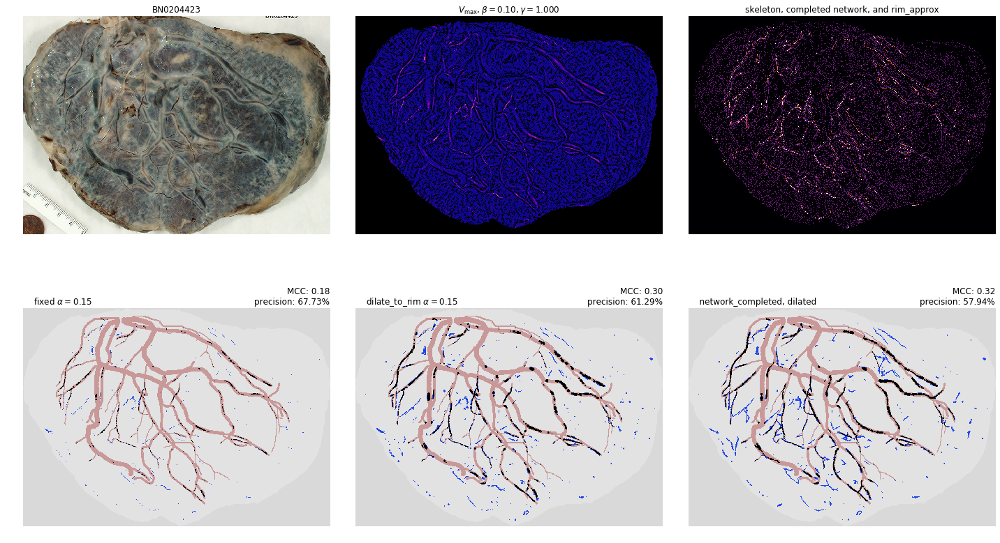
there are 1362 endpoints
checking compatibility of endpoints by labels and calculating distances
removed 888401 pairs of endpoints from consideration (out of 926841 possible pairs)
removed 36975 more pairs by avoiding crossings/zero score paths
there are 811 endpoints
checking compatibility of endpoints by labels and calculating distances
removed 310753 pairs of endpoints from consideration (out of 328455 possible pairs)
removed 16886 more pairs by avoiding crossings/zero score paths
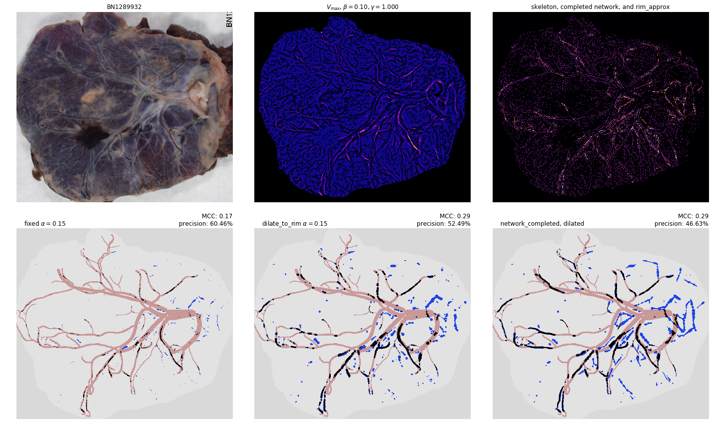
there are 75 endpoints
checking compatibility of endpoints by labels and calculating distances
removed 1905 pairs of endpoints from consideration (out of 2775 possible pairs)
removed 808 more pairs by avoiding crossings/zero score paths
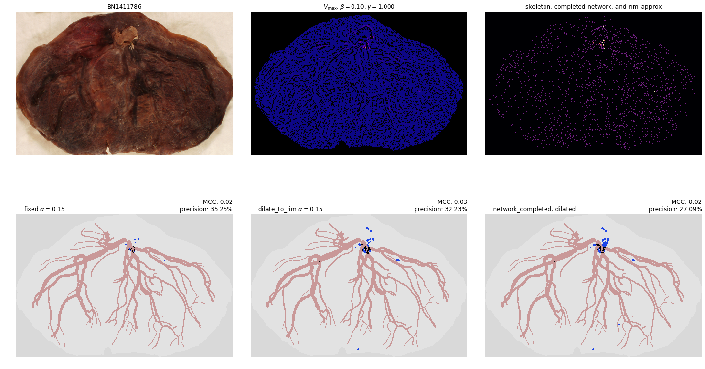
there are 1007 endpoints
checking compatibility of endpoints by labels and calculating distances
removed 476316 pairs of endpoints from consideration (out of 506521 possible pairs)
removed 29074 more pairs by avoiding crossings/zero score paths
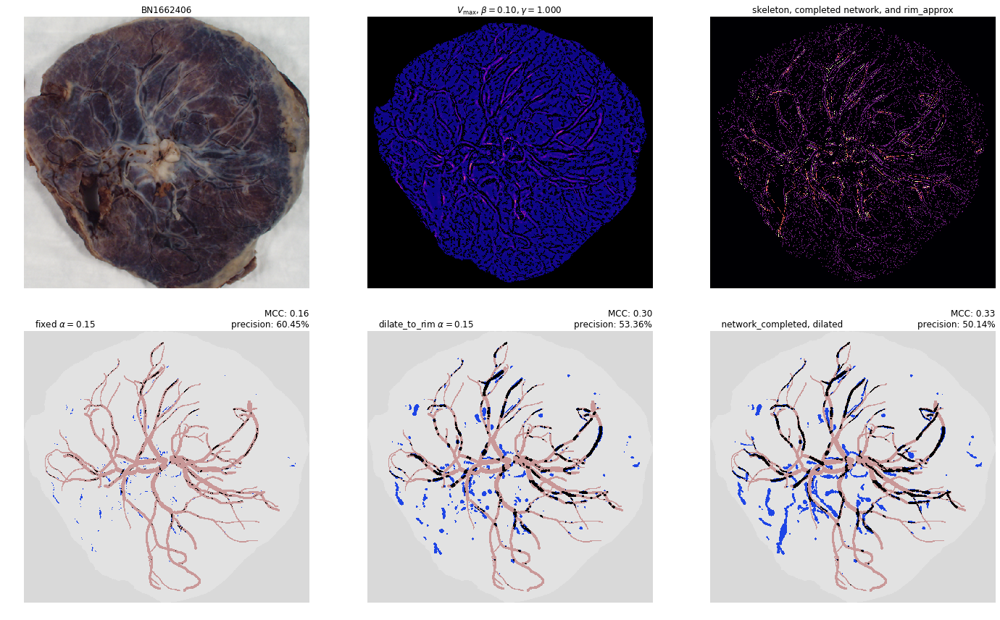
there are 745 endpoints
checking compatibility of endpoints by labels and calculating distances
removed 265783 pairs of endpoints from consideration (out of 277140 possible pairs)
removed 10670 more pairs by avoiding crossings/zero score paths
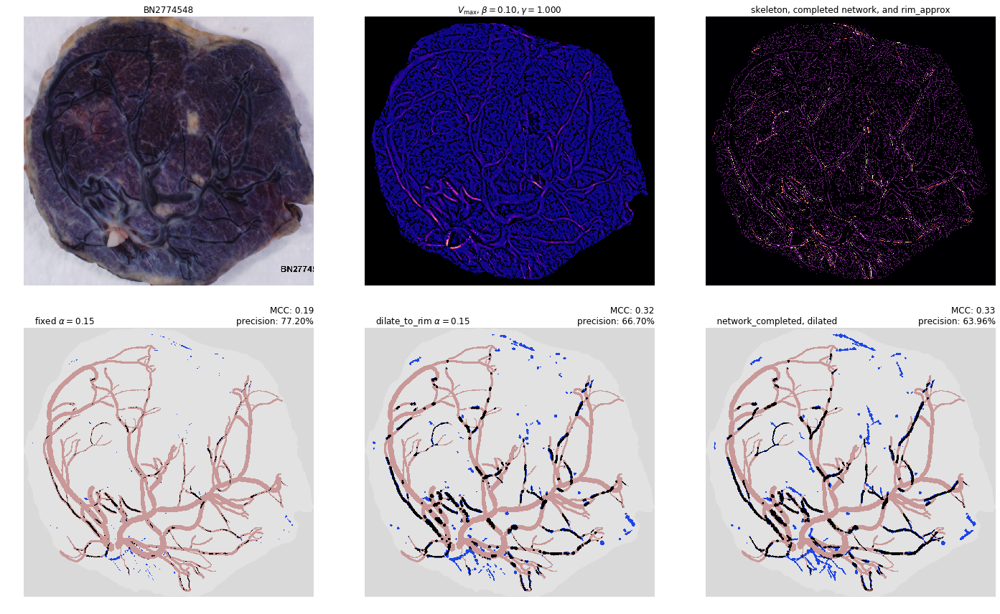
there are 2171 endpoints
checking compatibility of endpoints by labels and calculating distances
removed 2.28355e+06 pairs of endpoints from consideration (out of 2.35554e+06 possible pairs)
removed 69235 more pairs by avoiding crossings/zero score paths
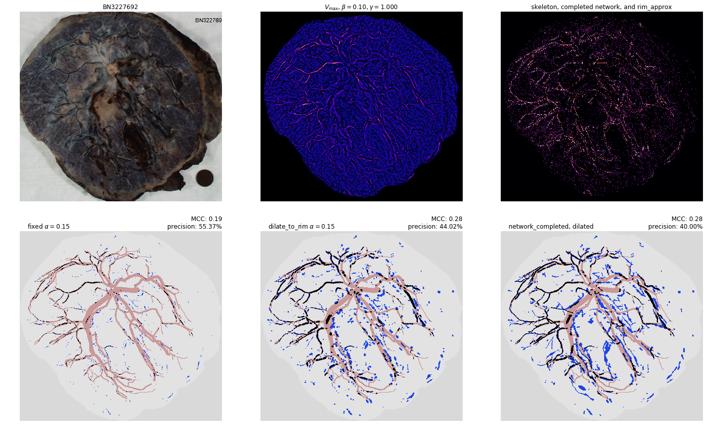
there are 1700 endpoints
checking compatibility of endpoints by labels and calculating distances
removed 1.39528e+06 pairs of endpoints from consideration (out of 1.44415e+06 possible pairs)
removed 47003 more pairs by avoiding crossings/zero score paths
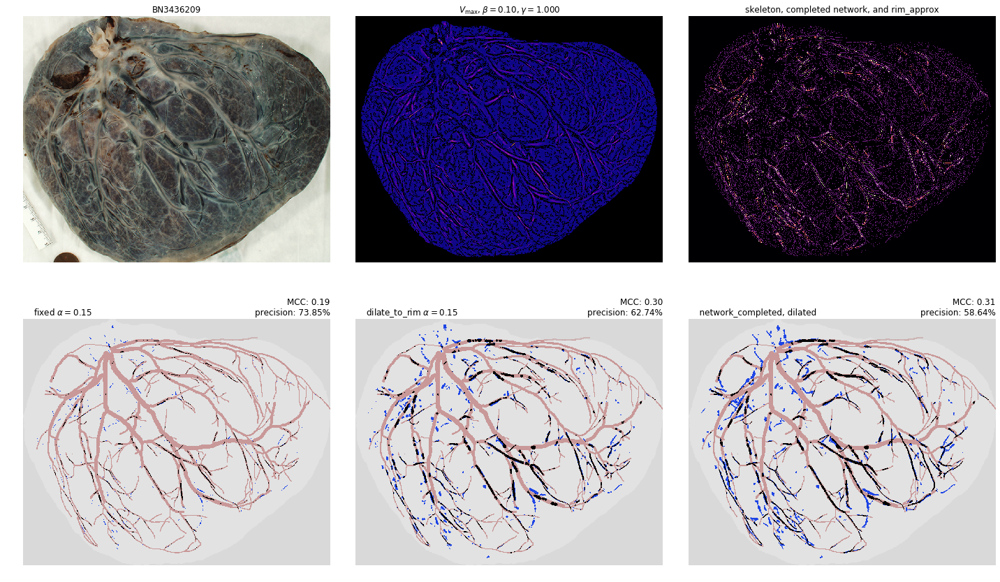
there are 651 endpoints
checking compatibility of endpoints by labels and calculating distances
removed 195110 pairs of endpoints from consideration (out of 211575 possible pairs)
removed 15811 more pairs by avoiding crossings/zero score paths
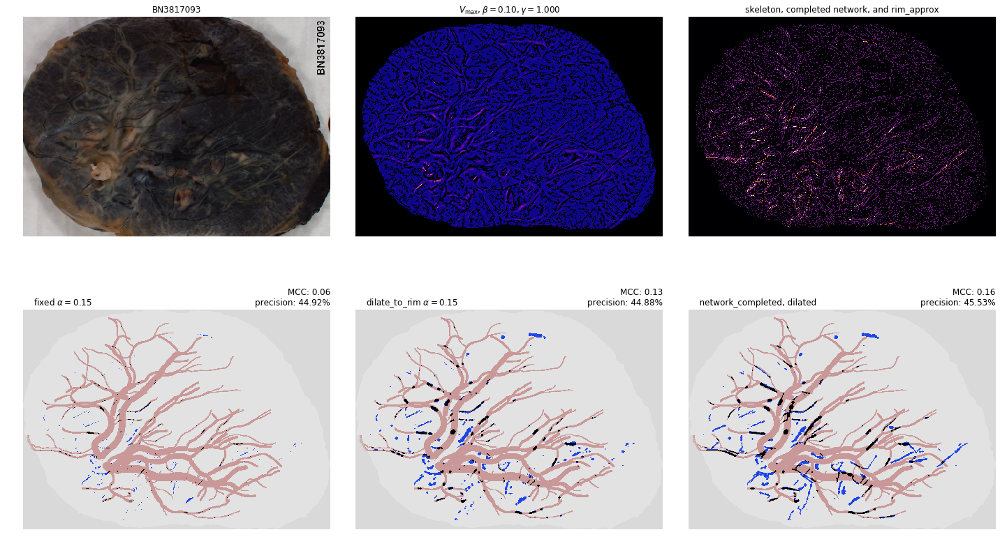
there are 914 endpoints
checking compatibility of endpoints by labels and calculating distances
removed 393597 pairs of endpoints from consideration (out of 417241 possible pairs)
removed 22701 more pairs by avoiding crossings/zero score paths
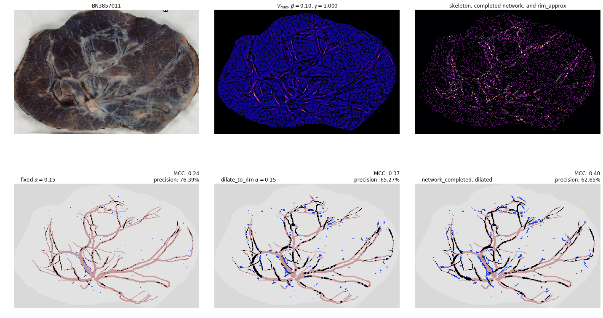
there are 1358 endpoints
checking compatibility of endpoints by labels and calculating distances
removed 867590 pairs of endpoints from consideration (out of 921403 possible pairs)
removed 51710 more pairs by avoiding crossings/zero score paths
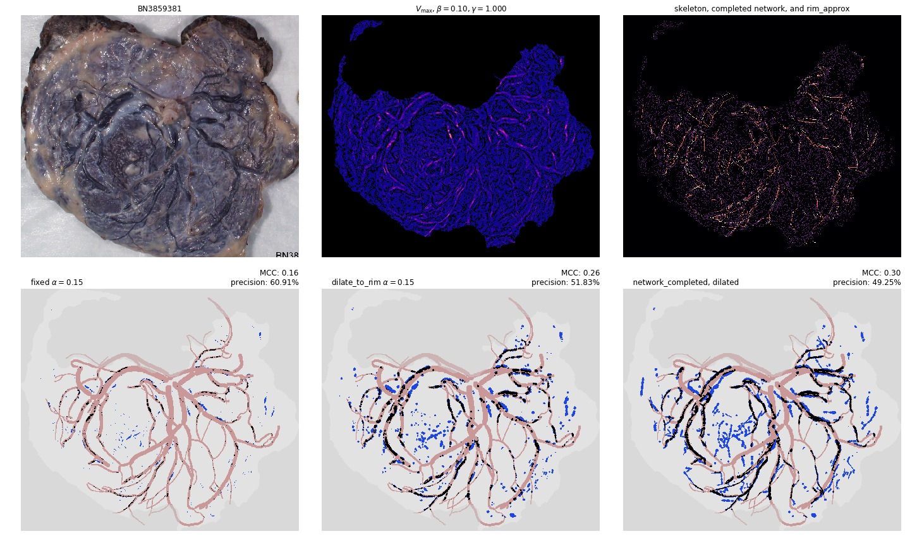
there are 1482 endpoints
checking compatibility of endpoints by labels and calculating distances
removed 1.05309e+06 pairs of endpoints from consideration (out of 1.09742e+06 possible pairs)
removed 42606 more pairs by avoiding crossings/zero score paths
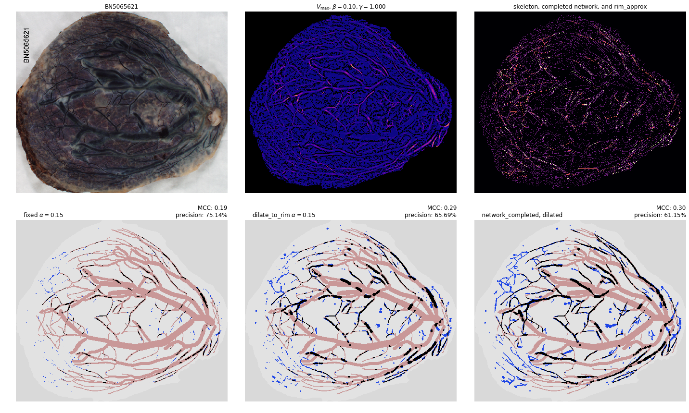
there are 1248 endpoints
checking compatibility of endpoints by labels and calculating distances
removed 734250 pairs of endpoints from consideration (out of 778128 possible pairs)
removed 42489 more pairs by avoiding crossings/zero score paths
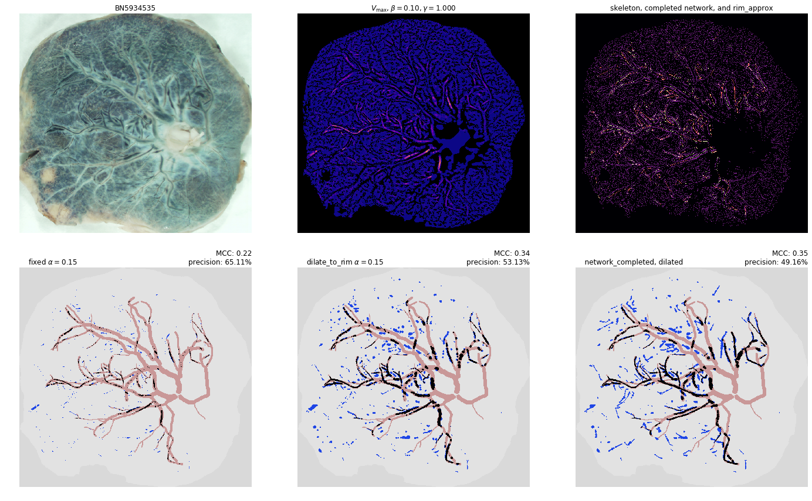
there are 1140 endpoints
checking compatibility of endpoints by labels and calculating distances
removed 612399 pairs of endpoints from consideration (out of 649230 possible pairs)
removed 35528 more pairs by avoiding crossings/zero score paths
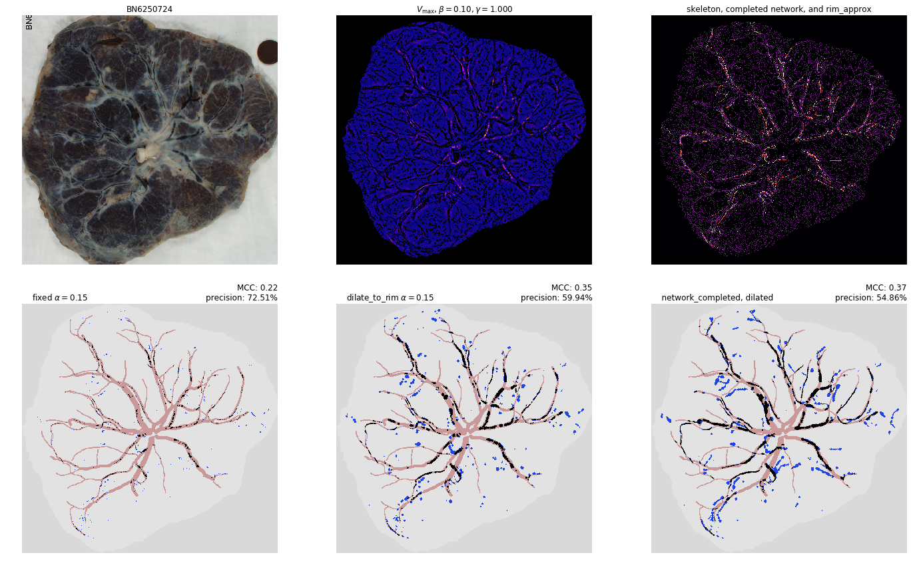
there are 1142 endpoints
checking compatibility of endpoints by labels and calculating distances
removed 614688 pairs of endpoints from consideration (out of 651511 possible pairs)
removed 35453 more pairs by avoiding crossings/zero score paths
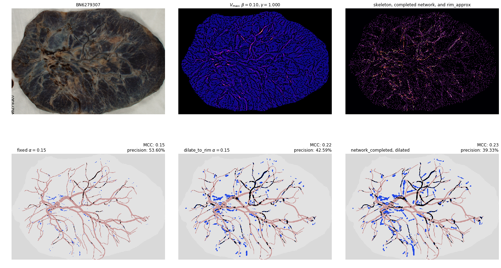
there are 2016 endpoints
checking compatibility of endpoints by labels and calculating distances
removed 1.95184e+06 pairs of endpoints from consideration (out of 2.03112e+06 possible pairs)
removed 76670 more pairs by avoiding crossings/zero score paths
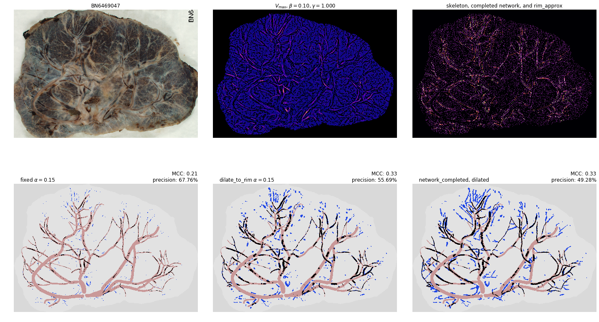
there are 1133 endpoints
checking compatibility of endpoints by labels and calculating distances
removed 613387 pairs of endpoints from consideration (out of 641278 possible pairs)
removed 26836 more pairs by avoiding crossings/zero score paths
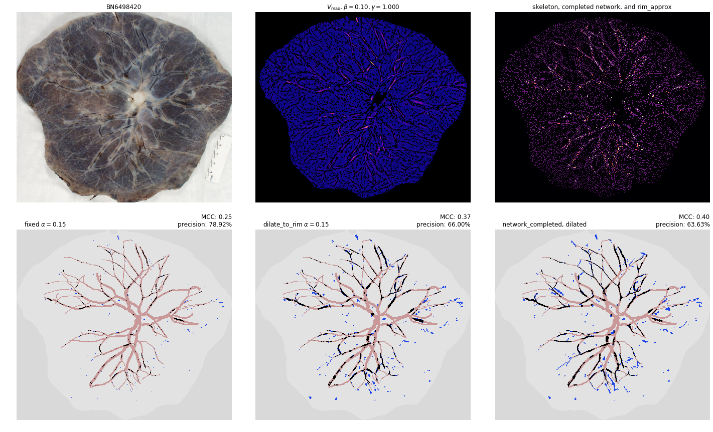
there are 2462 endpoints
checking compatibility of endpoints by labels and calculating distances
removed 2.91856e+06 pairs of endpoints from consideration (out of 3.02949e+06 possible pairs)
removed 107616 more pairs by avoiding crossings/zero score paths
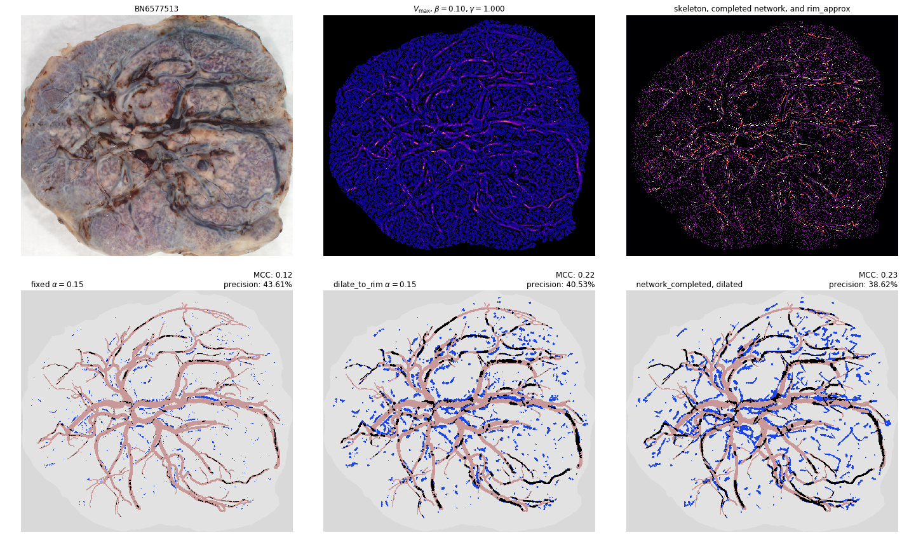
there are 838 endpoints
checking compatibility of endpoints by labels and calculating distances
removed 317105 pairs of endpoints from consideration (out of 350703 possible pairs)
removed 32635 more pairs by avoiding crossings/zero score paths
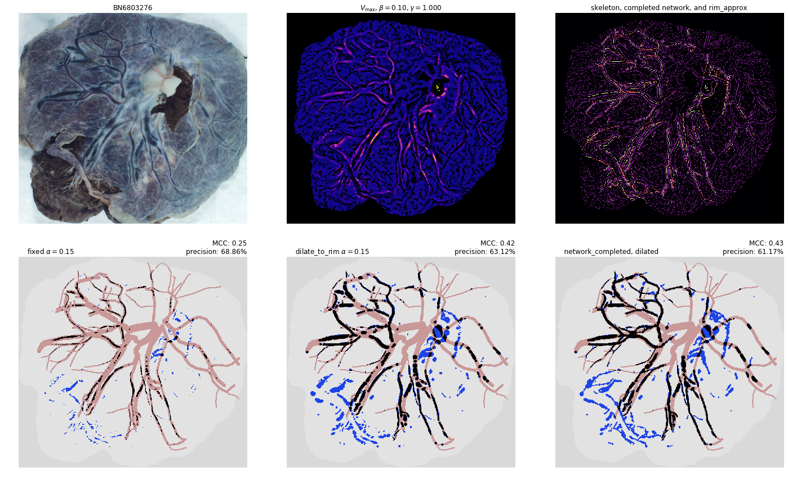
there are 536 endpoints
checking compatibility of endpoints by labels and calculating distances
removed 134346 pairs of endpoints from consideration (out of 143380 possible pairs)
removed 8504 more pairs by avoiding crossings/zero score paths
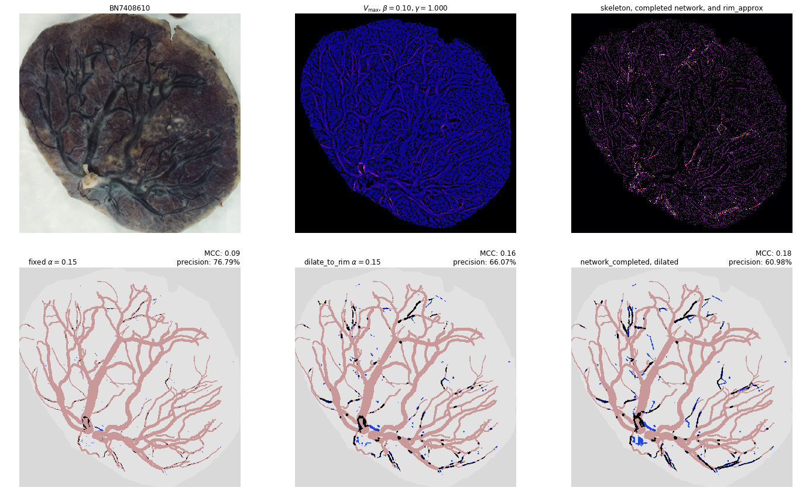
there are 495 endpoints
checking compatibility of endpoints by labels and calculating distances
removed 116035 pairs of endpoints from consideration (out of 122265 possible pairs)
removed 5811 more pairs by avoiding crossings/zero score paths
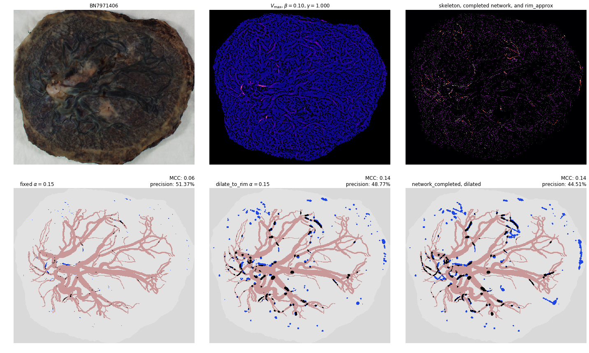
there are 2403 endpoints
checking compatibility of endpoints by labels and calculating distances
removed 2.79796e+06 pairs of endpoints from consideration (out of 2.886e+06 possible pairs)
removed 84964 more pairs by avoiding crossings/zero score paths
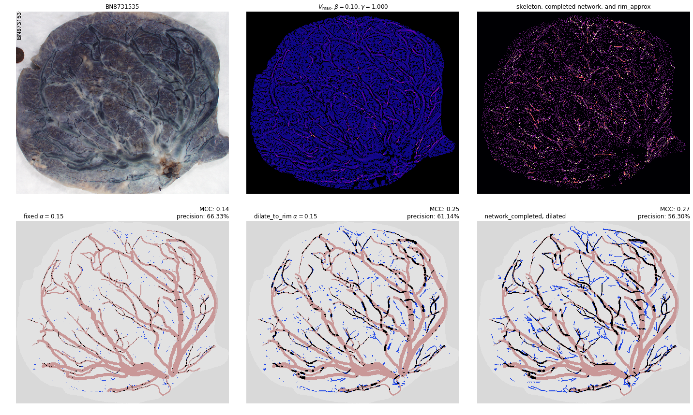
there are 456 endpoints
checking compatibility of endpoints by labels and calculating distances
removed 98706 pairs of endpoints from consideration (out of 103740 possible pairs)
removed 4662 more pairs by avoiding crossings/zero score paths
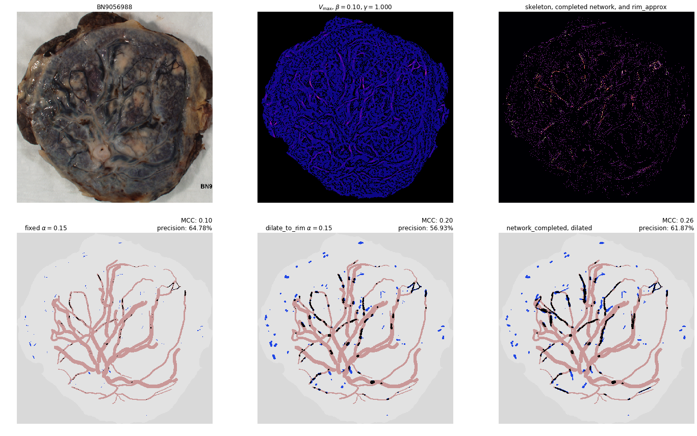
there are 659 endpoints
checking compatibility of endpoints by labels and calculating distances
removed 202768 pairs of endpoints from consideration (out of 216811 possible pairs)
removed 13315 more pairs by avoiding crossings/zero score paths
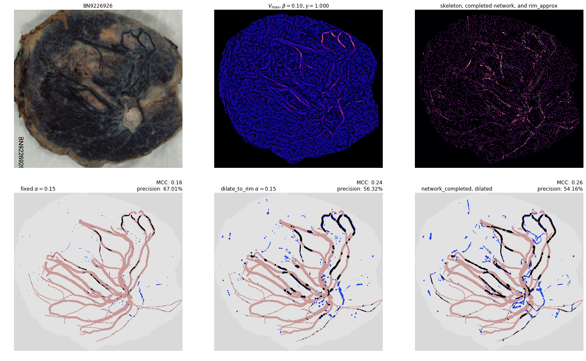
there are 1281 endpoints
checking compatibility of endpoints by labels and calculating distances
removed 773249 pairs of endpoints from consideration (out of 819840 possible pairs)
removed 44905 more pairs by avoiding crossings/zero score paths
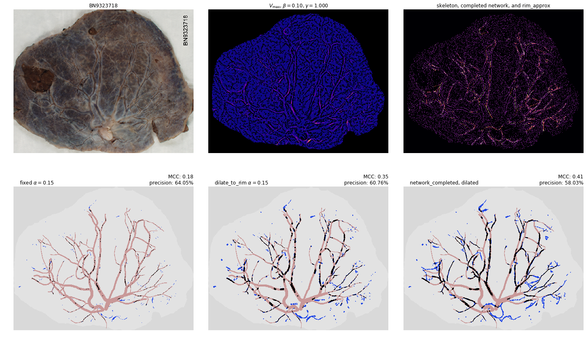
there are 1769 endpoints
checking compatibility of endpoints by labels and calculating distances
removed 1.49415e+06 pairs of endpoints from consideration (out of 1.5638e+06 possible pairs)
removed 67362 more pairs by avoiding crossings/zero score paths
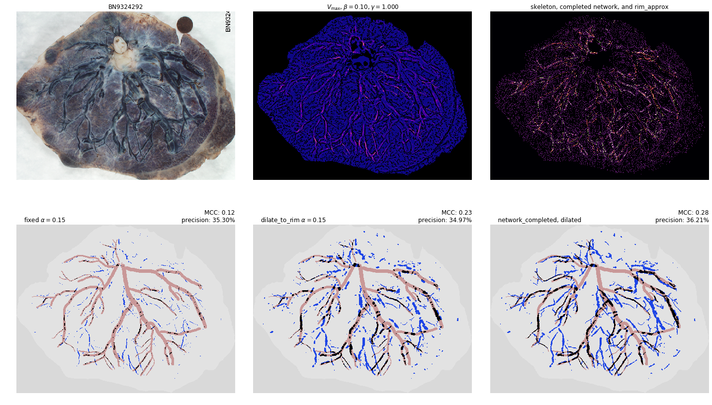
In [14]: